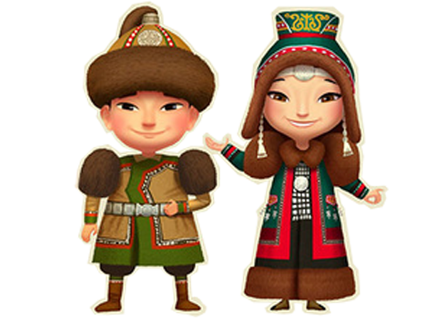

My site
Главная
Интерактив
О нас
Народ
барабан
барабан чукчей, сделан из обтянутой и высушенной кожи северного оленя
обувь
Типичная чукотская обувь — короткие мягкие сапоги нескольких видов: из шкур нерпы шерстью наружу, а также из оленьего меха с чулками и травяными стельками, предохраняющими ноги от обморожения (зимние).
мужской головной убор
шапка из меха
украшение
илин-кэбиьэр - женское украшение из металла, которое вешается на шею

Чукчи
Якуты